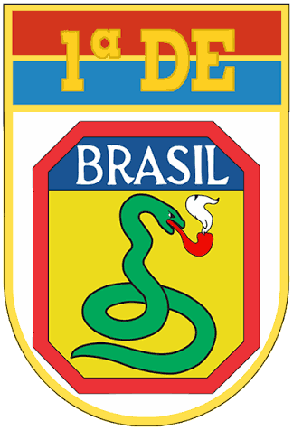
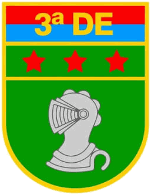
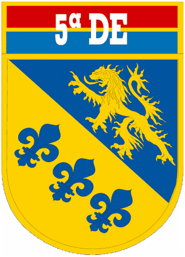
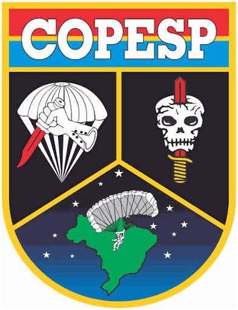

Exército Brasileiro
Divisões, brigadas, comandos e unidades terrestres do projeto.

Tropas leves.

Tropas médias e motorizadas.

Tropas blindadas.

BFE, BAC e B Op Psi. Comando direto, não brigada.
Escolas e informações de formação do Exército.
Sem notícia.